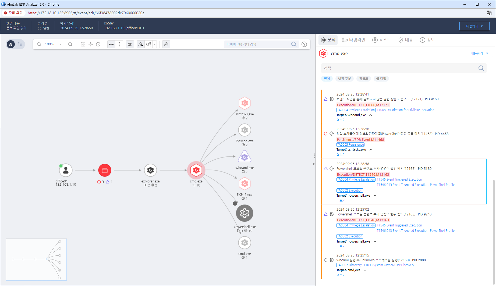

T1546.013.01 T1546.013.01 - powershell Profile
D3FEND
MITRE ATT&CK 액션을 기준으로 대응 방안을 작성
Detection
Powershell을 통해 $profile 변수 컨텐츠 추가(Add-Content) 또는 변경(Set-Content)
Detection(EDR)

Response
- 파워쉘 명령 : 파워쉘 명령어 모니터링
- 프로필 파일 : 프로필 디렉토리 모니터링
- 파워쉘 프로세스 : 프로필에 의해 실행되는 프로세스 모니터링
Mitigations
파일 무결성 검증 (M1033 - Process Monitoring)
- 정기적으로 시스템 파일 및 프로세스의 무결성 검증을 수행하여 이진 패딩을 통한 변조를 탐지
- 디지털 서명을 사용하여 정상적인 파일만 시스템에서 실행되도록 설정
- 파일 무결성 모니터링 도구를 통해 시스템의 핵심 파일에 대한 변조를 실시간으로 확인
보안 소프트웨어 및 EDR/XDR 사용 (M1047 - System Logging & Monitoring)
- EDR/XDR 솔루션을 활용하여 이진 패딩으로 변조된 파일을 탐지하고 분석
- 의심스러운 파일이 실행되거나 시스템에 로드될 때 알림을 설정하여 실시간으로 대응
- 시스템 로그 및 파일 활동을 추적하여 패딩된 바이너리가 실행되는 경로를 분석
애플리케이션 보안 강화 (M1031 - Network Segmentation)
- 정기적인 애플리케이션 보안 검사를 통해 악성 파일이 시스템에서 실행되는 것을 방지
- 애플리케이션 패치를 통해 이진 패딩 기법을 통한 취약점을 해결하고, 애플리케이션 보호 기능을 활성화
- 운영 체제의 보안 기능을 강화하여 악성 코드가 시스템에 침투하지 못하도록 설정
이상 징후 모니터링 (M1042 - Disable or Remove Feature or Program)
- 이상 징후를 모니터링하여 파일 크기나 메모리 구조에 변화가 있을 경우 즉시 경고를 받도록 설정
- 프로세스 및 메모리 모니터링을 통해 비정상적인 이진 파일 또는 메모리 변조가 발생하지 않도록 감시
- 시스템의 패딩을 통한 변조를 방지하기 위해 파일 크기와 데이터 구조에 대한 규칙을 설정
정기적인 보안 패치 및 업데이트 (M1022 - Automated Response)
- 정기적으로 보안 패치를 적용하여 이진 패딩 기법을 통한 공격에 취약한 지점을 해결
- 자동화된 대응 시스템을 구축하여 악성 코드가 발견되면 즉시 격리 및 삭제되도록 설정
- 파일 시스템 및 바이너리 검사 도구를 사용하여 시스템의 파일 및 실행 중인 프로세스의 정합성을 지속적으로 검증
Affected Techniques
Action 실행시 함꼐 영향을 받는 다른 Techniqes
| D3FEND |
| D3-SCA System Call Analysis |
| D3-FCA File Creation Analysis |